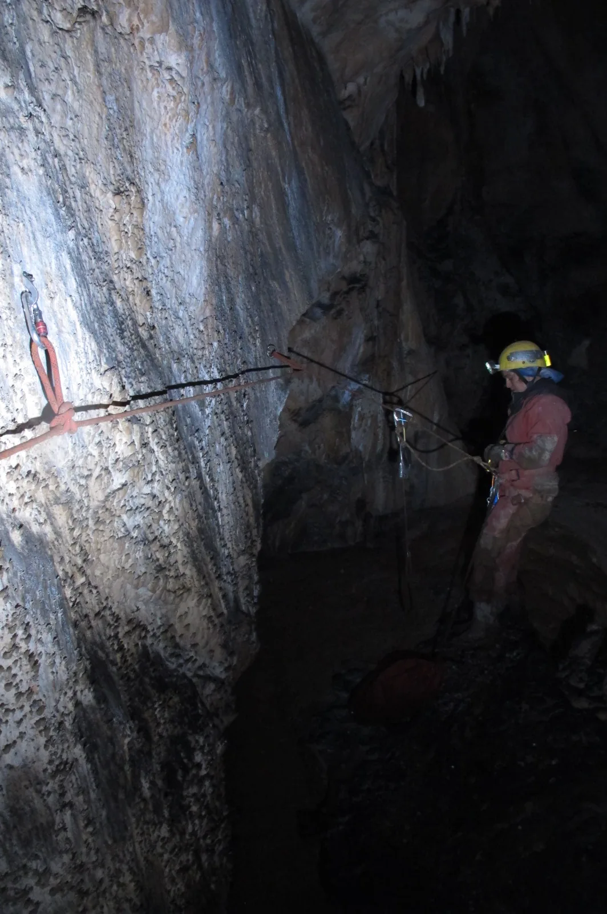

Istraživanje pod Meduzom (KG_DP)
Kako je precizan nacrt potaknuo ekipu na istraživanje, a bušilica postala leteća mašina i sve jugu unatoč - pročitajte u nastavku

Za vikend 20.-21.10.2018. u Kiti Gaćešinoj održan je završni vikend tečaja za vođu speleospasilačke ekipe u organizaciji HGSS-a. U pripremi za tečaj, Jure Šarić, Teo Barišić i ja smo otišli u jamu postaviti trasu za izvlačenje, s obzirom da se u tom dijelu jame posljednji put istraživalo davne 2006. godine. Trasu je Teo zamislio oko Ašova (bivak na -150m) u jednoj velikoj petlji – neposredno blizu, gradiranih teškoća, a opet tako raznovrsno. U vertikali Pod Meduzom gledamo nacrt i ustanovljavamo stanje na terenu. Nacrt je zaista prezican, svi (bitni) topografski detalji ti olakšavaju orijentaciju. Uzalud ti to ako nemaš kvalitetan (vjerodostojan) nacrt ili nisi pažljiv u čitanju istog. Gledam ime crtača (Teo Barišić, 2006.!), cijenim njegov trud i razmišljam o tome što bih mislio o njemu da se nije potrudio ovdje ucrtati mali (nezanemariv) povremeni tok, saljevastu glonđu ili tehničke detalje u vertikali. To mi u trenu izravnava savjest i tjera da se uvijek (bezobzira na perspektivnost kanala) trudim oko nacrta unatoč hladnoći, osjećaju gladi ili umoru. Posebna je to spoznaja, čitajući tuđi nacrt, shvatiti što je vodilo crtača da nacrta određeni dio na određeni način. Gledamo vertikalu Pod Meduzom – ustanovljavamo tri upitnika. Govorim Teu da me to malo napalilo i da bih došao raditi upitnike prvi slobodan vikend. Ostavljamo opremljen dio oko dijela Pod Meduzom i uspješno okončavamo tečaj.
Skupljamo se u srijedu u Radićevoj 23 i unatoč lošoj prognozi za vikend, odlučujemo da velebitaška četvorka za vikend 26.-28.10. ide po nove metre. Plan je uhvatiti prozor stabilnog vremena, ući u petak navečer i pred kišu u subotu navečer izaći van. Na okretaljci Kite dolazimo u petak oko 23h, nema kiše ali puše jugo. Pred ulaz kontroliramo zalihe hrane i opreme, preslagujemo transportne i za čas smo na bivku. Radimo plan za subotu – dvije ekipe – Raki i Ana će raditi prečku na vrhu vertikale Pod Meduzom a Matija i Niko penjati u bočni kanal na dnu. U datom trenutku shvaćamo da smo zaboravili jedno kladivo! No dobro, to ćemo riješavati ujutro. Matija se budi ranije i odlazi po kladivo (jutarnji speleo jogging), dok mi ostali spokojno spavamo.
Nakon što se Matija vratio sa jutarnje tjelovježbe, nakon okrijepe ulazimo u upitnike. Ana crta, ja prečkam. Nakon tridesetak novoistraženih metara dolazimo do kraja kanala. Raspremamo, fotkamo i spuštamo se do dečkiju. Ljuljam se u vertikali do novog upitnika i u datom trenutku shvatim da mi je pala bušilica u vertikalu od 30-tak metara. O.K. bušilica i dalje radi (riječ je o Bosch gbh 18 vec) a ovaj upitnik ostavljamo za neku slijedeću akciju. Dečki su popeli u kanal i nacrtali tridesetak metara. Ustanovili su da postoji mala perspektiva ali da će ipak raspremiti penj. Nije nam to dovoljno dobro za Kitu. Nakon okrijepe, palimo van i oko 20h u subotu smo vani, opet bez padalina koje smo očekivali! Sretni radi obavljenog posla i činjenice da nismo pokisli, idemo se susresti sa ekipom velebitaša i pridruženih speleologa iz Speleološkog društva Ponir (Banja Luka) koji su na Cerovačkima. Provodimo večer s njima i u nedjelju posjećujemo špilju Cerovačku donju, još jednu prekrasnu Crnopačku pećinu! Cerovačke su još jedan vrlo zanimljiv speleološki sustav gdje bi svakako trebalo intenzivirati istraživanja. Nakon ritualne pive u gračačkom Zvonimiru, stajemo u Krnjaku na pranje opreme i predvečer smo u svojim domovima.
Sudionici izleta: Matija Čepelak Niko Jakovčev Ana Lipovac – Bobica Marko Rakovac – Raki [gallery ids="2034,2035,2036,2038,2040,2041,2042,2043,2044,2047,2048,2046,2037,2045" type="rectangular"]